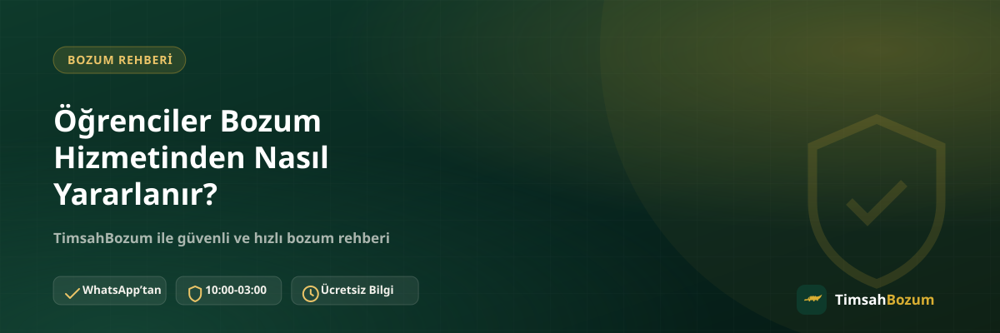

Oyun kodu hediye alan, kullanmadığı mobil ödeme bakiyesi kalan veya elindeki dijital bakiyeyi harçlığa çevirmek isteyen öğrenci sayısı hiç az değil. Bozum hizmeti, bu ihtiyacı karşılamak için tasarlanmış basit bir süreç sunuyor. Bu yazıda öğrencilerin bozum işleminden nasıl faydalanabileceğini, hangi noktalara dikkat etmeleri gerektiğini ve sık merak edilen soruları anlatıyoruz.
Öğrenciler İçin Bozum Neden Cazip?
Öğrencilerin elinde sıkça hediye kartı kodu, oyun içi bakiye ya da kullanılmayan mobil ödeme bakiyesi birikir. Doğum günü hediyesi olarak gelen bir Razer Gold kodu, kullanılmayan bir Paycell bakiyesi veya faturaya yansımış mobil ödeme tutarı gibi kalemler, harcanmadığı sürece değersiz kalır. Bozum işlemi bu tür bakiyeleri nakde çevirerek gerçek bir ihtiyaca dönüştürüyor.
Öğrenciler Bozum Yaptırabilir mi?
Bozum işlemi için meslek, gelir belgesi veya öğrenci statüsüne dair bir şart aranmıyor. Elinde geçerli bir kod veya bakiye bulunan herkes, yaşı ve durumu ne olursa olsun WhatsApp üzerinden işlemi başlatabilir. Bu yüzden lise veya üniversite öğrencisi olman, sürece dahil olmanı engellemez.
Hangi Bakiyeler Bozdurulabilir?
Öğrencilerin elinde en sık rastlanan bakiye türleri arasında Razer Gold ve iTunes kodları, Pokus ve Paycell bakiyesi, ayrıca Vodafone, Türk Telekom ve Turkcell mobil ödeme bakiyeleri var. Kod tabanlı hizmetlerde (Razer Gold, iTunes) kodun tamamı tek seferde değerlendirilir, kısmi bozum yapılmaz. Bakiye tabanlı hizmetlerde (Pokus, Paycell, mobil ödeme) ise bakiyenin tamamını değil, istenen bir kısmını bozdurmak da mümkün. Mobil ödeme tarafında hangi hizmeti seçeceğinden emin değilsen mobil ödeme bozdurma sayfasından hizmetler arasındaki farkı inceleyebilirsin.
Bozum İçin Kimlik veya Öğrenci Belgesi Gerekir mi?
Hayır. Süreç boyunca üyelik oluşturma, form doldurma, kimlik belgesi veya öğrenci belgesi paylaşma gibi bir adım yok. İhtiyacın olan tek şey, kod bilgin ya da güncel bakiyeni gösteren okunaklı bir ekran görüntüsü ve WhatsApp üzerinden iletişim.
Mobil Hat Öğrencinin Kendi Üzerine Olmak Zorunda mı?
Mobil ödeme bakiyesi bozdururken, paylaşılan ekran görüntüsünün güncel ve okunaklı olması bekleniyor. Kod tabanlı hizmetlerde ise böyle bir hat sahipliği konusu gündeme gelmiyor, çünkü işleme konu olan şey bir kod, bir hat değil. Bu ayrımı bilmek, hangi bilgiyi hazırlaman gerektiğini netleştirir.
İşleme Nasıl Başlanır?
Süreç oldukça basit: WhatsApp hattımıza yazarak hangi hizmeti bozdurmak istediğini belirtiyorsun, kod veya bakiye bilgini paylaşıyorsun, güncel oranı teyit ediyorsun ve onay sonrası ödeme WhatsApp üzerinden görüşülen yöntemle yapılıyor. Bu adımların hiçbiri karmaşık bir kayıt süreci gerektirmiyor, bu yüzden ilk kez işlem yapacak bir öğrenci için de anlaşılması kolay.
Bozum İşlemi Ne Kadar Sürede Sonuçlanır?
Süreç, paylaşılan bilginin eksiksiz olmasına ve oranın hızlıca teyit edilmesine bağlı olarak ilerliyor. Kesin bir süre vermek yerine, güncel durumu ve tahmini süreyi WhatsApp'tan teyit etmen en doğru yaklaşım. Mesajını 10:00-03:00 saatleri dışında gönderirsen, hat açıldığında sıraya alınır, mesajın kaybolmaz.
Dikkat Edilmesi Gereken Noktalar
Kodu veya bakiye ekran görüntüsünü paylaşmadan önce bilgilerin doğruluğundan emin olmak, işlemi hızlandırıyor. Ayrıca bilgilerini yalnızca resmi WhatsApp hattımızdan (+90 543 887 21 71) paylaşman gerekiyor; farklı bir numaradan veya Instagram DM gibi bir kanaldan "TimsahBozum" adına ulaşıldığını düşünüyorsan, bilgi paylaşmadan önce resmi numaradan teyit almalısın. Hesabına erişim isteyen ya da sana SMS doğrulama kodu soran biri varsa, bu bozum süreciyle ilgisi olmayan bir dolandırıcılık girişimidir.
Harçlığını Yönetirken Bozumu Nasıl Kullanabilirsin?
Elinde biriken küçük tutarlı kodları veya bakiyeleri tek tek değil, birikince toplu şekilde bozdurmak hem senin hem karşı tarafın işini kolaylaştırır. Örneğin hem bir oyun kodun hem de kullanmadığın mobil ödeme bakiyen varsa, ikisini aynı mesajda belirtmen süreci tek turda ilerletir.
Bozum Öğrenciler İçin Güvenilir mi?
Güvenlik konusunda öğrencilerin en çok merak ettiği nokta, kod veya bakiye bilgisini paylaştıktan sonra ne olacağı. Süreç boyunca hesabına erişim istenmiyor, şifre sorulmuyor ve SMS doğrulama kodu talep edilmiyor. Böyle bir talep gelirse bunun bozum süreciyle bir ilgisi olmadığını, dolandırıcılık girişimi olabileceğini bilmelisin. Güvenliğini korumanın en basit yolu, tüm iletişimi yalnızca sitede yayınlanan resmi WhatsApp numarası üzerinden yürütmek ve farklı bir platformdan (Instagram, farklı bir telefon numarası gibi) gelen tekliflere itibar etmemek.
Aile Büyüklerinden Onay Almak Gerekir mi?
Bozum işlemi, işlemi başlatan kişinin kendi bilgilerini paylaşmasıyla yürüyor; sürecin kendisi ebeveyn onayı veya vekalet gibi ek bir belge istemiyor. Yine de kod veya bakiye ailenle ortak kullanılan bir hatta ya da hesaba aitse, işleme başlamadan önce durumu evdekilerle paylaşman, ileride çıkabilecek bir karışıklığı baştan önler. Bu, bozum sürecinin bir şartı değil, sağduyulu bir adım.
Kampüs Arkadaşlarıyla Ortak Kod Bozdurmak Mantıklı mı?
Bazı öğrenciler, birden fazla arkadaşın elindeki kodları veya bakiyeleri tek seferde bozdurmayı düşünebiliyor. Her kod veya bakiye kendi sahibinin bilgisiyle paylaşılmalı; başkasına ait bir kodu kendi adına paylaşmak karışıklığa yol açabilir. Bunun yerine her öğrenci kendi kodunu veya bakiyesini kendi WhatsApp hattından paylaşırsa, hem işlem takibi netleşir hem de olası bir anlaşmazlık riski ortadan kalkar.
İlgili Yazılar
- İlk Kez Bozum Yapacaklar İçin Kapsamlı Rehber
- Bozum İşlemi Nedir, Nasıl Çalışır? (Yeni Başlayanlar İçin)
- Acil Nakit İhtiyacında Mobil Ödeme Bozdurma
Elinde bozdurmak istediğin bir kod veya bakiye varsa, güncel oranı öğrenmek için WhatsApp hattımıza yazabilirsin.